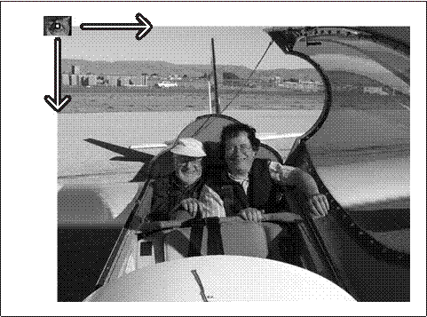

直方图与匹配
在分析图像、物体和视频信息的过程中，我们常常想把眼中看到的对字用直方图（histogram）表示。直方图可以用来描述各种不同的事情，如物体的色彩分布、物体的边缘梯度模板[Freeman95]，以及表示目标位置的当前假设（目标当前位置的假设？）的概率分布。图7-1显示了利用直方图进行快速姿态识别。从“上”，“右”，“左”，“停”和“OK”等手势中得到边缘梯度。然后设置一个摄像机，该摄像机观察人的各种手势以控制网络视频。在每帧中，从输入的视频中检
测感兴趣的色彩区域，然后计算这些感兴趣区域周围的边缘梯度方向，将得到的边缘梯度方向放到一个方向直方图相应的bin中，然后将该直方图与手势模板进行匹配，从而识别出各种手势。图7-1的垂直条显示不同手势的匹配程度。灰色的水平线为可接受阈值，表示对应某一手势模型胜出的垂直条。
图7-1：方向梯度的局部直方图，用以寻找手及其特征（姿态）。这里“胜出”的姿态（最长的垂直条）就是正确识别的“L”（向左移动）
直方图广泛应用于很多计算机视觉应用中。通过标记帧与帧之间显著的边缘和颜色的统计变化，直方图被用来检测视频中场景的变换。通过为每个兴趣点设置一个有相近特征的直方图所构成的“标签”，用以确定图像中的兴趣点。边缘、色彩、角等直方图构成了可以被传递给目标识别分类器的一个通用特征类型。色彩和边缘的直方图序列还可以用来识别网络视频是否被复制等。直方图是计算机视觉中最经典的工具之一。
简单地说，直方图就是对数据进行统计，将统计值组织到一系列事先定义好的bin中。bin中的值是从数据中计算出的特征的统计量，这些数据可以是诸如梯度、方向、色彩或任何其他特征。无论如何，直方图获得的是数据分布的统计图。通常直方图的维数要低于原始数据。图7-2刻画了一个典型的情况。图中显示了一个二维分布的点集（左上），施加一个网格（右上）并且统计每一个网格单元的数据点，然后产生一个一
图7-2:典型的直方图例子:从一个点集开始(左上)，施加计算网格(右上)，产生点集的一维直方图(右下)
维直方图（右下）。由于原始数据点可以表征任何事情，直方图实际上是一个方便表示图像特征的手段。
表示连续分布的直方图通过隐式计算每个网格单元中的均值来实现前面的功能。这就会产生一个问题，如图7-3所示。如果网格太宽（左上），则参与计算平均值
图7-3：直方图的正确性依赖于网格大小：如果网格太宽，则直方图统计中有太多的空间平均（左），如果网格太窄，则因太小的平均产生尖锐和单个效果（右）
的点太多，就会丧失分布的结构。如果网格太窄（右上），则没有足够的点来准确表示分布而且我们会得到小而尖锐的单元。
OpenCV有表征直方图的数据类型。该直方图数据结构能够以一维或者多维的方式表示直方图，并且包含所有可能跟踪的均匀或非均匀的bin中的数据。并且，如我们所期待的，它可以配属各种有用的函数，使得我们能够在直方图上容易地进行各种常见操作。
直方图的基本数据结构
首先直接查看CvHistogram的数据结构。
typedef struct CvHistogram
{
int type;
CvArr* bins;
float thresh[CV_MAX_DIM][2]; for uniform histograms
float** thresh2; for nonuniform histograms
CvMatND mat; embedded matrix header
} for array histograms
这个定义看起来很简单但并非如此，因为直方图的很多
内部数据都被存储于CvMatND结构中。我们用下面的程序创建一个新的直方图：
CvHistogram* cvCreateHist(
int dims,
int* sizes,
int type,
float** ranges = NULL,
int uniform = 1
);
变量dims表示直方图包含的维数。sizes变量必须为整数数组，数组长度等于dims。数组中的每一个整数表示分配给对应维数的bin的个数。type既可以是CV_HIST_ARRAY，用来表示使用密集多维矩阵结构（如CvMatND）存储多维直方图，也可以是
CV_HIST_SPARSE，当数据以稀疏矩阵（CvSparseMat）方式存储时。变量rangs可以是两个形式中的任一种。对均匀直方图来说，rangs是浮点数对构成的数组，数组的个数等于维数。而对非均匀直方图来说，则用包含分割非均匀bin的数据所构成的数组来代替均匀直方图所使用的数据对。如果某维数有N个bin，那么这个子数组有N+1个元素。每个数组的值均起始于最低bin的底边，终结于最高bin的顶边。布尔类型变量uniform说明直方图是否有均匀的bin，因此也说明了rangs的值该如何解析；如果设置为非0值，则直方图是均匀的。也可以设置rangs为NULL，这时意味rangs是“未知的”（它们也可以在后面使用特殊函数cvSetHistBinRangs()来设置）。很明显，最好在使用直方图之前给rangs设置数值。
void cvSetHistBinRanges(
CvHistogram* hist,
float** ranges,
int uniform = 1
);
cvSetHistRanges()中的变量与cvCreateHist()中的相应变量完全一致。如果想重用直方图，可以对其进行清零操作（即设置所有bins为0），或者使用通常的释放函数释放直方图。
void cvClearHist(
CvHistogram* hist
);
void cvReleaseHist(
CvHistogram** hist
);
通常，这些释放函数通过一个指针被调用，该指针指向一个直方图的指针，后者取自创建直方图的函数。一
旦直方图被释放，直方图指针便被设置为NULL。
另外一个有用的函数是根据已给出的数据创建直方图：
CvHistogram* cvMakeHistHeaderForArray(
int dims,
int* sizes,
CvHistogram* hist,
float* data,
float** ranges = NULL,
int uniform = 1
);
在这种情况下，hist是指向CvHistogram数据结构的指针，data是指向存储直方图bins的大小为sizes[0]*sizes[1]*..*sizes[dims-1]的区域的指针。注意，data是浮点数指针，因为直方图的内部数据类型描述
永远是浮点数。返回值与我们输入的hist值一样。与cvCreateHist()程序不同，没有type变量。所有由cvMakeHistHeaderForArray()创建的直方图都是密集直方图。最后一点：由于（假设）为直方图的bins分配了数据存储空间，则没有理由为CvHistogram结构再次调用cvReleaseHist()。你只需要清除头结构（如果没有在堆栈中分配它），当然，也要清除你自己创建的数据；但是，由于这些变量是你自己定义的，你应该用自己的方式处理它们。
• 访问直方图
访问直方图数据的方式有好几种。最直接的是使用OpenCV的访问函数：
double cvQueryHistValue_1D(
CvHistogram* hist,
int idx0
);
double cvQueryHistValue_2D(
CvHistogram* hist,
int idx0,
int idx1
);
double cvQueryHistValue_3D(
CvHistogram* hist,
int idx0,
int idx1,
int idx2
);
double cvQueryHistValue_nD(
CvHistogram* hist,
int* idxN
);
每个函数都返回相应bin中的值的浮点数。同样地，可以利用函数返回的bin的指针（不是bin的值）来设置（或者获得）直方图的bin的值。
float* cvGetHistValue_1D(
CvHistogram* hist,
int idx0
);
float* cvGetHistValue_2D(
CvHistogram* hist,
int idx0,
int idx1
);
float* cvGetHistValue_3D(
CvHistogram* hist,
int idx0,
int idx1,
int idx2
);
float* cvGetHistValue_nD(
CvHistogram* hist,
int* idxN
);
这些函数与cvGetReal*D和cvPtr*D等系列函数非常相似，事实上，它们几乎相同。在函数里传入的矩阵hist->bins被调用的方式本质上与其被直接的矩阵访问模式是一样的。类似地，稀疏直方图函数继承了它所对应的稀疏矩阵函数的一些行为。在稀疏直方图中，如果想利用函数GetHist*()来访问不存在的bin，这个不存在的bin会被自动创建，并且其值被设为0。注意，函数QueryHist*()不会创建不存在的bin。
这使我们转向访问直方图的更一般论题。在许多情况下，对于密集直方图来说，我们想直接访问直方图的bin成员。当然，我们可以将它视为数据访问的一部分。例如，我们想依次访问密集直方图中所有的数据元素，
或者基于效率原因想直接访问bin，在这种情况下，我们可以利用hist->mat.data.fl(对于密集型直方图来说)来访问。访问直方图的其他原因包括想知道直方图的维数或每个单独的bin表示的区域等。对这类信息，我们使用下面的小技巧来访问CvHistogram数据结构中的实际数据，或者访问嵌入在CvMatND数据结构中的信息来获得。
int n_dimension = histogram->mat.dims;
int dim_i_nbins = histogram->mat.dim[i].size;
//uniform histograms
int dim_i_bin_lower_bound = histogram->thresh[i][0];
int dim_i_bin_upper_bound = histogram->thresh[i][i];
//nonuniform histograms
int dim_i_bin_j_lower_bound = histogram->thresh2[i][j];
int dim_j_bin_j_upper_bound=histogram->thresh2[i][j+1];
可以看出，访问直方图数据结构是有多种方法的。
访问直方图
•
访问直方图数据的方式有好几种。最直接的是使用OpenCV的访问函数：
double cvQueryHistValue_1D(
CvHistogram* hist,
int idx0
);
double cvQueryHistValue_2D(
CvHistogram* hist,
int idx0,
int idx1
);
double cvQueryHistValue_3D(
CvHistogram* hist,
int idx0,
int idx1,
int idx2
);
double cvQueryHistValue_nD(
CvHistogram* hist,
int* idxN
);
每个函数都返回相应bin中的值的浮点数。同样地，可以利用函数返回的bin的指针（不是bin的值）来设置（或者获得）直方图的bin的值。
float* cvGetHistValue_1D(
CvHistogram* hist,
int idx0
);
float* cvGetHistValue_2D(
CvHistogram* hist,
int idx0,
int idx1
);
float* cvGetHistValue_3D(
CvHistogram* hist,
int idx0,
int idx1,
int idx2
);
float* cvGetHistValue_nD(
CvHistogram* hist,
int* idxN
);
这些函数与cvGetReal*D和cvPtr*D等系列函数非常相似，事实上，它们几乎相同。在函数里传入的矩阵hist->bins被调用的方式本质上与其被直接的矩阵访问模式是一样的。类似地，稀疏直方图函数继承了它所对应的稀疏矩阵函数的一些行为。在稀疏直方图中，如果想利用函数GetHist*()来访问不存在的bin，这个不存在的bin会被自动创建，并且其值被设为0。注意，函数QueryHist*()不会创建不存在的bin。
这使我们转向访问直方图的更一般论题。在许多情况下，对于密集直方图来说，我们想直接访问直方图的bin成员。当然，我们可以将它视为数据访问的一部分。例如，我们想依次访问密集直方图中所有的数据元素，
或者基于效率原因想直接访问bin，在这种情况下，我们可以利用hist->mat.data.fl(对于密集型直方图来说)来访问。访问直方图的其他原因包括想知道直方图的维数或每个单独的bin表示的区域等。对这类信息，我们使用下面的小技巧来访问CvHistogram数据结构中的实际数据，或者访问嵌入在CvMatND数据结构中的信息来获得。
int n_dimension = histogram->mat.dims;
int dim_i_nbins = histogram->mat.dim[i].size;
//uniform histograms
int dim_i_bin_lower_bound = histogram->thresh[i][0];
int dim_i_bin_upper_bound = histogram->thresh[i][i];
//nonuniform histograms
int dim_i_bin_j_lower_bound = histogram->thresh2[i][j];
int dim_j_bin_j_upper_bound=histogram->thresh2[i][j+1];
可以看出，访问直方图数据结构是有多种方法的。
直方图的基本操作
现在，我们有了直方图这个重要的数据结构，自然要用它来做一些有趣的事情。首先来看一些反复用到的基本操作，然后转到为了更特殊的任务而用到的一些更复杂的特性。
当处理直方图的时候，一般会向直方图不同的bin中累积信息。完成信息的积累后，通常希望使用有着归一化形式的直方图，这样每个bin应该表示分配给整个直方图的所有事件的一部分。
cvNormalizeHist(CvHistogram* hist, double factor);
这里的hist表示直方图，factor表示直方图归一化后的数
值（通常情况下设为1）。注意，factor是一个double类型的数据，尽管函数CvHistogram()的内部数据类型通常都是float——这进一步说明了OpenCV是一个不断改进的项目！
接下来的一个很方便的函数是阈值函数：
cvThreshHist(CvHistogram* hist, double factor);
变量factor是一个开关阈值。进行直方图阈值化处理之后，小于给定阈值的各个bin的值都被设为0。回忆图像阈值函数cvThreshold()，直方图阈值函数与参数threshold_type设置为CV_THRESH_TOZERO的图像阈值函数类似。不幸的是，没有方便的直方图阈值函数来提供其他threshold类型的类似操作。然而，实际上函数cvThreshHist()或许是最常用的函数，因为我们在使用实数类型数据的时候常常将包含极少数据点的bin去
除掉。这些bins通常是噪声，因此将这些bins的值设为0。
另一个有用的函数是cvCopyHist()，表示将一个直方图的信息复制到另一个直方图。
void cvCopyHist(const CvHistogram* src, CvHistogram** dst);
可以通过两种方式来用这个函数。如果目标直方图*dst和源直方图有相同的大小，那么src中所有的数据和bin的范围都被复制给*dst。另一种使用cvCopyHist()的方式是设置*dst为NULL。这种情况下，生成一个与src一样大的新直方图，所有数据和bin的范围都被复制到该直方图中（与图像函数cvCloneImage()相似）。当第二个参数dst是一个指向直方图的指针的指针，这种复制是允许的。与src不同，src仅仅是一个指向直方图的指针。当函数cvCopyHist()被调用时，如果*dst为NULL，则当该函数返回时，*dst被分配给一个指向新分配的直方图的指针。
让我们继续了解有用的直方图函数。下一个函数是cvGetMinMaxHistValue()，它输出直方图中找到的最小值和最大值。
void cvGetMinMaxHistValue(
const CvHistogram* hist,
float* min_value,
float* max_value,
int* min_idx = NULL,
int* max_idx = NULL
);
因此，给定直方图hist，函数cvGetMinMaxHistValue()将计算其最小值和最大值。当该函数返回时，*min_value和*max_value将分别被设置为这两个极值。
如果不需要其中的一个（或两个）值，可以设置相应变量为NULL。接下来的两个参数是可选的；如果使用默认值（NULL），则不做任何事情。如果为非NULL的指针，则函数返回最小和最大值的索引值。对于多维直方图，参数min_idx和max_idx(如果非NULL)被设为指向一个整数数组的指针，数组长度等于直方图的维数。如果一个直方图中有许多个bin的值都为最小值（或最大值），则返回具有最小索引（对多维直方图则按字母顺序）的bin。
在收集直方图数据后，通常利用函数cvGetMinMaxHistValue()来寻求最小值，同时利用函数cvThreshHist()在最小值附近进行阈值化操作，最终通过函数cvNormalizeHist()来归一化直方图。
最后是从图像中自动计算直方图，函数cvCalcHist()完成
了这一关键任务：
void cvCalcHist(
IplImage** image,
CvHistogram* hist,
int accumulate = 0,
const CvArr* mask = NULL
);
第一个参数image是一个指向数组的IplImage*类型指针。这允许利用多个图像通道。对于多通道图像（如HSV或RGB），在调用函数cvCalcHist()之前，先要用函数cvSplit()(见第3章或第5章)将图像分为单通道的。这诚然有点痛苦，但是应该考虑到多个图像通道很常见，它们常常包含一个图像的不同过滤形态，如梯度通道、YUV中的U或V通道。可以想象，如果试图处理包含多
通道的多个图像，情形将有多么混乱（需要确定谁在哪儿用这些图像的哪个通道）。为了避免这种混淆，所有传递给cvCalHist()的图像都被假设（或被要求）为单通道图像。得到直方图后，bin的值由通过多幅图像确定的多元组来确定。参数hist是一个适当维数的直方图（比如，维数等于输入图像的通道数）。后两个参数时可选的。参数accumulate如果非0，表示直方图hist在读入图像之前没有被清零，注意，变量accumulate允许cvCalcHist()在一个数据采集循环中被多次调用。最后一个参数mask是一个可选的布尔变量；如果被设为非NULL，则只有与mask非0元素对应的像素点会被包含在计算直方图中。
对比两个直方图
然而，对于直方图来说，另一个不可或缺的工具是用某些具体的标准来比较两个直方图的相似度。这些工具首先由Swain和Ballard[Swain91]引入，后经Schiele和Crowley[Schiele96]推广。函数cvCompareHist()用于对比两个直方图的相似度。
double cvCompareHist(
const CvHistogram* hist1,
const CvHistogram* hist2,
int method
);
前两个参数是要比较的大小相同的直方图，第三个变量是所选择的距离标准，有下面四种可用选项。
相关（method=CV_COMP_CORREL）
* 此处也可以使用CvMat* matrix指针。
其中且N等于直方图中bin的个数。
对于相关（correlation），数值越大则越匹配。完全匹配的数值为1，完全不匹配是-1，值为0则表示无关联（随机组合）。
卡方（method=CV_COMP_CHISQR）
对于chi-square，低分比高分匹配的匹配程度高。完全匹配的值为0，完全不匹配为无限值（依赖于直方图的大小）。
直方图相交（method=CV_COMP_INTERSECT）
对于直方图相交，高分表示好匹配，而低分则表示坏匹配。如果两个直方图都被归一化到1，则完全匹配是1，完全不匹配是0。
Bhattacharyya距离（method=CV_COMP_BHATTACHARYYA）

对于Bhattacharyya匹配[Bhattacharyya43]，低分数表示好匹配，而高分数表示坏的匹配。完全匹配是0，完全不匹配是1。
对于CV_COMP_BHATTACHARYYA，公式中的一个特定比
例用来对输入的直方图进行归一化操作，然而一般情况下，在对比直方图之前，都应该自行进行归一化操作，因为如果不归一化，像直方图相交等概念就没有任何意义（即使允许）。
图7-4所描述的简单情况应该能够说明问题。事实上，这或许是我们所能想象到的最简单的情况：只有两个bin的一维直方图。模板直方图左边bin的值为1.0，而右边bin的值为0.0。最后三列给出了用来对比的直方图以及对它们使用不同的度量后得到的值（EMD度量将马上介绍）。
图7-4给出了不同匹配方式的快速参考，但是这有点令人不安。如果直方图的bin仅仅偏移一个位置——就像图中第一个和第三个直方图那样，那么所有这些匹配方法（除了EMD）都会产生完全不匹配的结果，即使这两个直方图有相似的形状。
图7-4最右边一列说明EMD的返回值，EMD是一种距离的度量方式。对比第三个和模板直方图，EMD方法准确量化了这样的情况：第三个直方图向右移动了一个单位。下将继续探讨这一主题。
以作者的经验来说，在快速但不怎么精确匹配的情况下，intersection方法的效果好。而在慢速但较精确的情况下，用chi-square或Bhattacharyya方法的效果好。EMD方法给出最直观的匹配，但更慢一些。
直方图用法示例
现在是提供一些有用例子的时候了。程序如例7-1所示（改写自OpenCV代码），该例给出了我们怎样利用刚刚讨论过的一些函数。该程序根据输入的图像计算出一个色相饱和度（hue-saturation）直方图，然后利用网格的方法将该直方图以网格形式显示。
例7-1：直方图的计算与显示
int main(int argc, char** argv){
IplImage* src;
if((src=cvLoadImage("E:\\Pictures\\portrait.png", 1))!=0){//argc==2&&
//Compute the HSV image and decompose it into separate planes.
IplImage* hsv = cvCreateImage(cvGetSize(src), 8, 3);
cvCvtColor(src, hsv, CV_BGR2HSV);
IplImage* h_plane = cvCreateImage(cvGetSize(src), 8, 1);
IplImage* s_plane = cvCreateImage(cvGetSize(src), 8, 1);
IplImage* v_plane = cvCreateImage(cvGetSize(src), 8, 1);
IplImage* planes[] = {h_plane, s_plane};
cvSplit(hsv, h_plane, s_plane, v_plane, 0);
//Build the histogram and compute its contents
int h_bins = 30, s_bins = 32;
CvHistogram* hist;
{
int hist_size[] = {h_bins, s_bins};
float h_ranges[] = {0, 180}; //hue is [0, 180]
float s_ranges[] = {0, 255};
float* ranges[] = {h_ranges, s_ranges};
hist = cvCreateHist(
2,
hist_size,
CV_HIST_ARRAY,
ranges,
1
);
}
cvCalcHist(planes, hist, 0, 0); //Compute histogram
cvNormalizeHist(hist, 1.0); //Normalize it
//Create an image to use to visualize our histogram.
int scale = 10;
IplImage* hist_img = cvCreateImage(
cvSize(h_bins*scale, s_bins*scale),
8,
3
);
cvZero(hist_img);
//populate our visualization with little gray squares.
float max_value = 0;
cvGetMinMaxHistValue(hist, 0, &max_value, 0, 0);
for(int h=0; h<h_bins; h++){
for(int s=0; s<s_bins; s++){
float bin_val = cvQueryHistValue_2D(hist, h, s);
int intensity = cvRound(bin_val*255/max_value);
cvRectangle(
hist_img,
cvPoint(h*scale, s*scale),
cvPoint((h+1)*scale - 1, (s+1)*scale - 1),
CV_RGB(intensity, intensity, intensity),
CV_FILLED
);
}
}
cvNamedWindow("Source", 1);
cvShowImage("Source", src);
cvNamedWindow("H-S Histogram", 1);
cvShowImage("H-S Histogram", hist_img);
cvWaitKey(0);
}
}
在这个例子中，我们花费了相当一部分时间来准备函数cvCalcHist()的参数，而这通常是必须的。我们还选择了对可视化现实中的颜色进行归一化处理，而不是归一化直方图本身，尽管对于某些应用而言，归一化直方图比归一化颜色值会好一些。这样一来，我们就有理由调用函数cvGetMinMaxHistValue()，而如果归一化直方图本身，我们就没有理由这样做。
让我们看一些更实际的例子：在不同光照条件下人手的颜色直方图。图7-5的左列给出了室内环境下的人手、室外阴影环境下的人手以及室外阳光照射环境下的人手。中间一列给出了手的肤色对应的蓝、绿、红（BGR）直方图。右列给出了对应的HSV直方图，其中V(亮度值：value)是垂直轴，S(饱和度，saturation)是半径，H(色调，hue)是角度。注意，室内环境下的
最黑，室外阴影环境下的稍微亮点儿，而室外阳光照射环境下的最亮。注意，颜色的变化在某种程度上是光学的色彩变化造成的。
7-5:室内环境(左上)}、室外阴影环境(左中)、室外阳光照射环境(左下)中的黄色直方图，中间一列和右列分别给出相关的BGR和HSYV直方图
作为直方图比较的测试，我们利用手掌的一部分（即室内环境下手掌的上半部分），分别将该图像中色彩的直方图与该图像区域部分的直方图以及其他两幅手部图像中直方图进行对比。新鲜肤色通常比较容易在HSV色彩空间中提取。这提示对我们在色调（hue）和饱和度（saturation）通道中的限制不仅足够，而且有助于识别人的新鲜肤色。表7-1显示出我们实验的匹配结果，这证实了光线会在色彩中导致严重的误匹配。有时，归一化的BGR在光线变化时会比HSV工作得更好。
表7-1：通过四种匹配方法，室内手掌上半部肤色与列出的手掌肤色的直方图对比
Comparison |
CORREL |
CHISQR |
INTERSECT |
BHATTACHARYYA |
Indoor lower half |
0.96 |
0.14 |
0.82 |
0.2 |
Outdoor shade |
0.09 |
1.57 |
0.13 |
0.8 |
Outdoor sun |
–0.0 |
1.98 |
0.01 |
0.99 |
一些更复杂的策略
迄今讨论的所有东西都是相当基本的。每一个函数都有其相对明显的需要。总的说来，这些函数为计算机视觉（或许还有领域）应用直方图提供了一个良好基础。从这点上讲，我们需要看一些更复杂的OpenCV程序，这些程序在特定的应用下非常有用。它们还包括一个更复杂的直方图比较方法和工具，该工具可以计算/或显示图像的哪个部分与直方图中的给定部分相关。
陆地移动距离
光线变化能引起图像颜色值的漂移（图7-5），尽管这些漂移没有改变颜色直方图的形状，但是这些漂移引起了颜色值位置的变化，从而导致前述匹配策略失效。如果利用直方图的距离测量来代替直方图的匹配策略，那么我们仍然可以像直方图对比一样对比两个直方图的距离，即使第二个直方图发生漂移，也能找到最小的距离度量。陆地移动距离（Earth Mover’s Distance, EMD）[Rubner00]是一种度量准则；它实际上度量的是怎样将一个直方图的形状转变为另一个直方图的形状，包括移动直方图的部分（或全部）到一个新的位置，可以在任何维的直方图上进行这种度量。
再看看图7-4。我们可以在最右边一列看到EMD距离度量
的特性。0表示最精确的匹配。半匹配是成功地将直方图的一半转换，将左边直方图的一半转换到下一个直方图。最终，移动整个直方图到右边需要整个单位的距离（即将模板直方图转换为完全不匹配直方图）。
EMD算法本身是个通用算法，它允许用户自己设置距离度量或者自己的移动代价矩阵。用户可以记录直方图“素材”从一个直方图什么位置滚动到另一个直方图后，也可以利用此前数据信息所产生的非线性距离度量。OpenCV中的EMD函数是cvCalcEMD2()，如下所示。
float cvCalcEMD2(
const CvArr* signature1,
const CvArr* signature2,
int distance_type,
CvDistanceFunction distance_func = NULL,
const CvArr* cost_matrix = NULL,
CvArr* flow = NULL,
float* lower_bound = NULL,
void* userdata = NULL
);
函数cvCalcEMD2()有许多令人头疼的参数，所以它直观上看起来是一个很复杂的函数，但其复杂性来源于该算法的精确的配置选项。幸运的是，这个函数可以有更基本、更直观的形式，不必有这么多参数（注意：所有的“=NULL”默认值）。例7-2给出了其简单的形式。
例7-2：简单的EMD接口
float cvCalcEMD2(
const CvArr* signature1,
const CvArr* signature2,
int distance_type
);
cvCalcEMD2()的简单形式可以由参数distance_type确定，可以是Manhattan距离（CV_DIST_L1），也可以是Euclidean距离（CV_DIST_2）。尽管只是在直方图中应用EMD，但接口使用名称为signatures的两个数组参数更方便。
Signature数组通常是浮点型的，每行包括直方图的bin及其坐标，对图7-4的一维的直方图来说，直方图左边一列（忽略模型）的signatures（列于数组的每一行）定义如下：上面，[1,0; 0,1]；中间，[0.5,0;0.5,1]；底部，[0,0;1,1]。如果三维直方图中的一个bin在(x, y, z)索引为(7, 43, 11)处的值为537，那么这个bin中的signature行应该是[537, 7, 43, 11]。这就是我们将直方图转换为signature的方式。
例如，假设我们现在有两个直方图，hist1和hist2，我们
想要将其转化为两个signature，sig1和sig2。如果只是想使情况更难一点，可假设有一个h_bins×s_bins的二维直方图（如前面的代码示例）。例7-3演示了怎样将两个直方图转换为两个signature。
例7-3：从EMD直方图创建signature
int main( int argc, char** argv ) {
IplImage* src[5], *tmp;
int i;
if((tmp = cvLoadImage("E:\\Pictures\\portrait.png", 1)) == 0){
printf("Error on reading image 1, %s\n","E:\\Pictures\\portrait.png");
help();
return(-1);
}
//沿y平分复制到两个图片
printf("Getting size [[%d] [%d]]\n",tmp->width,tmp->height);
CvSize size = cvGetSize(tmp);
printf("Get size %d %d\n",size.width,size.height);
int width = size.width;
int height = size.height;
int halfheight = height >> 1;
src[0] = cvCreateImage(cvSize(width,halfheight), 8, 3);
src[1] = cvCreateImage(cvSize(width,halfheight), 8, 3);
if(src[0]->widthStep != tmp->widthStep){
printf("Error, Withstep of alloated src doesn't equal withStep of loaded image [%d vs %d]",
src[0]->widthStep,tmp->widthStep);
help();
return(-2);
}
int widthStep = tmp->widthStep;
unsigned char *p = (unsigned char*)(tmp->imageData);
unsigned char *sp = (unsigned char*)(src[0]->imageData);
for(i=0; i<widthStep*halfheight; ++i){//Top half
*sp++ = *p++;
}
sp = (unsigned char*)(src[1]->imageData);
for(i=0; i<widthStep*halfheight; ++i) {//Bottom half
*sp++ = *p++;
}
//LOAD THE OTHER THREE IMAGES
src[2]=cvLoadImage("E:\\Pictures\\man.jpg",1);
src[3]=cvLoadImage("E:\\Pictures\\9a504fc2d5628535ef9490cc96ef76c6a6ef63e2.jpg",1);
src[4]=cvLoadImage("E:\\Pictures\\1f178a82b9014a90eb73941ea9773912b21beec0.jpg",1);
// Compute the HSV image, and decompose it into separate planes.计算HSV图像，分成多个平面
IplImage *hsv[5], *h_plane[5],*s_plane[5],*v_plane[5],*planes[5][2];
IplImage* hist_img[5];
CvHistogram* hist[5];
int h_bins = 8, s_bins = 8;
int hist_size[] = { h_bins, s_bins };
float h_ranges[] = { 0, 180 }; // hue is [0,180]
float s_ranges[] = { 0, 255 };
float* ranges[] = { h_ranges, s_ranges };
int scale = 10;
for(i = 0; i<5; ++i){
hsv[i] = cvCreateImage( cvGetSize(src[i]), 8, 3 );
cvCvtColor( src[i], hsv[i], CV_BGR2HSV );
h_plane[i] = cvCreateImage( cvGetSize(src[i]), 8, 1 );
s_plane[i] = cvCreateImage( cvGetSize(src[i]), 8, 1 );
v_plane[i] = cvCreateImage( cvGetSize(src[i]), 8, 1 );
planes[i][0] = h_plane[i];
planes[i][1] = s_plane[i];
cvSplit( hsv[i], h_plane[i], s_plane[i], v_plane[i], 0 );
{
hist[i] = cvCreateHist(
2,
hist_size,
CV_HIST_ARRAY,
ranges,
1
);
}
cvCalcHist( planes[i], hist[i], 0, 0 );
cvNormalizeHist( hist[i], 1.0 );
// Create an image to use to visualize our histogram.
hist_img[i] = cvCreateImage(
cvSize( h_bins * scale, s_bins * scale ),
8,
3
);
cvZero( hist_img[i] );
// populate our visualization with little gray squares.
float max_value = 0;
float *fp,fval;
cvGetMinMaxHistValue( hist[i], 0, &max_value, 0, 0 );
for( int h = 0; h < h_bins; h++ ) {
for( int s = 0; s < s_bins; s++ ) {
float bin_val = cvQueryHistValue_2D( hist[i], h, s );
int intensity = cvRound( bin_val * 255 / max_value );
cvRectangle(
hist_img[i],
cvPoint( h*scale, s*scale ),
cvPoint( (h+1)*scale - 1, (s+1)*scale - 1),
CV_RGB(intensity,intensity,intensity),
CV_FILLED
);
}
}
}//For the 5 images
//DISPLAY
cvNamedWindow( "Source0", 1 );
cvShowImage( "Source0", src[0] );
... …
注意，在这个例子中，函数cvSet2D()利用CvScalar()设置数组中的数值，即使该矩阵中的每一个元素都是单一的浮点型数据。我们利用内联宏cvScalar()来完成这个任务。一旦将直方图转换为signature，我们就可以得到这个距离测量。选择Enclidean距离，现在增加例7-4中的这部分代码。
例7-4：利用EMD来度量两个分布之间的相似性
//DO EMD AND REPORT
//
float emd = cvCalcEMD2(sig1, sig2, CV_DIST_L2);
printf(“%f; ”, emd);
反向投影
反向投影（back projection）是一种记录像素点（为cvCalcBackProject()）或像素块（cvCalcBackProjectPatch()）如何适应直方图模型中分布的方式。例如，我们有一个颜色直方图，可以利用反向投影在图像中找到该区域。该函数调用需要执行如下查找：
void cvCalcBackProject(
IplImage* image,
CvArr* back_project,
const CvHistogram* hist
);
我们已经在函数cvCalcHist()见到过单通道的图像数组
IplImage** image(见7.3节)。数组中的图像数与用来创建直方图模型hist中的图像数完全相同——且具有相同的顺序。例7-1演示了怎样将一幅图像转换为单一通道然后再建立单通道图像数组。image或数组back_project与数组的输入图像大小一样，而且也是单通道，8位或浮点图像。back_project的值设置为hist中的相关bin的值。如果直方图是归一化的，此值便与一个条件概率值相关（即图像中像素点为直方图hist所表征的某种成员的概率）。在图7-6中，用肤色直方图来推导肤色图像的概率。
图7-6：在每个依赖于颜色的像素点上的直方图反向投影：HSV肤色直方图（左上）；被用来转换的手的图像（右上）到肤色概率图像（右下）；左下是手的直方图
注意：当back_project是一个8位图像而不是一个浮点数图像时，不必归一化该直方图或重新定义其尺寸。因为，标准化后的直方图的最大值为1，在8位图像中，任何小于该值的数都会被四舍五入至0。如果想看到该值，还需重新映射back_project的值，这取决于直方图中的最大数值。
基于块的反向投影
我们可以利用基本的back_project方法来为一个特定像素是否可能是一个特定目标类型的成员（以一个直方图作为该目标类型的模型）建模。这与某个特定目标是否存在的概率计算不完全相同。另一种方法是考虑图像子区域以及子区域的特征（比如颜色）直方图，并且想知道子区域特征的直方图是否与模型的直方图匹配。然后，我们把每一个这样的子区域与目标是否位于该子区域的概率联系起来。
因此，正如我们可以用函数cvCalcBackProject()计算一个像素是否是一个已知目标的一部分，也可以用函数cvCalcBackProjectPatch()计算一块区域是否包含已知的目标。函数cvCalcBackProjectPatch()在整个输入图像使用一个滑动窗口，如图7-7所示。在输入图像矩阵的每一个位置，块中所有的像素点都被设置为在目标图像中对应的块中心位置的像素点。这一点非常重要，因为图像的许多特性（如纹理）在单一的像素级别上无法确定，但可从一组像素确定。
图7-7：反向投影。使用在输入图像平面上的滑动块来设置目标图像上相应的像素（块的中心）；对于归一化直方图模型来说，结果图像可以被解释为一个概率图，它表示目标是否可能出现（此图取自OpenCV参考手册）
在这些例子中，为简单起见，我们对颜色进行采样以建立直方图模型，所以图7-6给出了整个手，因为手的像素能很好地与肤色直方图模型匹配。利用块，我们可以检测局部区域的统计特性，如局部亮度的变化弥补整个目标纹理最多的特性。使用局部块的时候，函数cvCalcBackProjectPatch()有两种用法：当采样窗口小于目标时，作为一个区域检测器，当采样窗口和目标一般大时，作为目标检测器。图7-8显示如何利用函数cvCalcBackProjectPatch()作为区域检测器。我们从手掌肤色的直方图模型开始，在整个图像上移动小窗口，使得反向投影图像上的每个像素点，在给定原始图像上窗口周围的所有像素点时，都表示该像素点的肤色概率。图7-8中手的尺寸远大于扫描窗口的尺寸，所以手掌区域被优先检测出来。图7-9从一个蓝色杯子的直方图模型开始。与图7-8的检测区域相反，图7-9展示
函数cvCalcBackProjectPatch()可以被用作目标检测器。当窗口的大小和目标的大小大致相同时，我们希望在反向投影图像中找到整个目标。在反向投影图像中，找到该峰值对应的位置（图7-9中，杯子），即为我们要找到目标的位置。
OpenCV提供的图块的反向投影函数如下：
void cvCalcBackProjectPatch(
IplImage* images,
CvArr* dst,
CvSize patch_size,
CvHistogram* hist,
int method,
float factor
);
这里，同一个单通道图像数组被cvCalcHist()用来创建直方图。但目标图像dst不一样，它仅仅是一个单通道浮点型图像，其大小为(images[0][0].width-patch_size.x+1, images[0][0].height – patch_size.y + 1)。该尺寸的解释（见图7-7）是块的中心像素设置为dst中相对应的位置，所以在图像的每一侧，都丢失了半个块维数大小的数据。
图7-8：当窗口（在右上图的白色小框）比手要小时，利用肤色的直方图目标模型得到的反向投影；这里直方图模型是一个手的颜色分布，峰值的位置对应的是手的中心
参数patch_size等同于所期望的块的大小，可以利用宏cvSize(width, height)来设定。我们已经熟悉直方图的参数了；如同函数cvCalcBackProject()一样，这个是要比较每个窗口的直方图模型。比较的参数与函数cvCompareHist()中的方法类型参数一样（见7.3.1节）。最后的参数factor，是归一化水平，这个参数与前面讲到的函数cvNormalizeHist()中的参数一致，可以设置为1或可视化的更大值。由于其适应性，通常在调用函数cvCalcBackProjectPatch()之前可以自由选择是否归一化直方图模型。
图7-9：利用函数cvCalcBackProjectPatch()定位目标（这里是一个咖啡杯），其大小近似等于块大小（上图的白色矩形区域）。用色调-饱和度直方图（左上）来为寻找的建模，然后与整幅图像的HS直方图比较（左下）；cvCalcBackProjectPatch()得到的结果（右下）就是凭借其颜色即可轻易从图像中找出的目标。
最后的问题出现了：一旦我们得到了目标图像的概率值，又应怎样利用该图像来找到我们要找到目标呢？我们可以利用第3章讲到的函数cvMinMaxLoc()来寻找，最大值的位置（第一步先平滑）最有可能是目标在图像中的位置。这使我们转到有点离题的模板匹配。
模板匹配
通过cvMatchTemplate()做模板匹配不是基于直方图的；事实上，使用本节介绍的匹配方法之一，通过在输入图像上滑动图像块对实际的图像块和输入图像进行匹配。
如图7-10所示，我们有一个包含人脸的图像块，那么我们在整幅输入图像上移动该脸来寻找表示可能会有另一张脸存在的最优匹配。该函数的调用方法与cvCalcBackProjectPatch()很相似。

图7-10:函数cvMahtcTfemplate()在另一幅图像上移动模板图像块来寻找匹配
void cvMatchTemplate(
const CvArr* image,
const CvArr* templ,
CvArr* result,
int methd
);
与在cvCalcBackProjectPatch()中看到的输入图像数组不同，这里使用一个8位或浮点型单通道图像或彩色图像作为输入。Templ型中的匹配模型就是来自于包含欲寻找的目标的相似图像块。输出目标图像将被放入result图像中，它是单通道8位或浮点型图像（图像大小为images->width-patch_size.x+1, images->height-patch_size.y+1），如同我们前面在cvCalcBackProjectPatch()中看到的那样。匹配的方法稍微有些复杂，将要在下文解释，这里用I来表示输入图像，T为模板，R为结果。
平方差匹配法（method=CV_TM_SQDIFF）
这类方法利用平方差来进行匹配，最好匹配为0。匹配越差，匹配值越大。
相关匹配法（method=CV_TM_CCORR）
这类方法采用模板和图像之间的乘法操作，所以较大的数表示匹配程度较高，0表示最坏的匹配效果。
相关匹配法（method=CV_TM_CCOEFF）
这类方法将模板对其均值的相对值与图像对其均值的相对值进行匹配，1表示完美的匹配，-1表示最糟糕的匹配，0表示没有任何相关性（随机序列）。
归一化方法
对于刚才描述的三种方法中的任一个方法来说，都有其归一化的形式，根据Rodgers[Rodgers88]的描述，它们最早由Galton[Galton]提出。归一化的方法很有用，因为，像前面提到的那样，它们可以帮助我们减少模板和图像上光线变化所产生影响。在每一种情况下，归一化的系数都如下：
表7-2给出了标准模板匹配的各种方法的参数值。

通常，随着从简单的测量（平方差）到更复杂的测量（相关系数），我们可获得越来越准确的匹配（同时也意味着越来越大的计算代价）。最好的办法是对所有这些设置多做一些测试实验，以便为自己的应用选择同时兼顾速度和精度的最佳方案。
至于函数cvCalcBackProjectPatch()，一旦我们利用函数cvMatchTemplate()获得一个匹配的结束图像，便可以利用函数cvMinMaxLoc()找到最匹配的位置。同样，我们希望保证在某个点附近有一些好的匹配区域，以避免随机模板恰好完整匹配。一个好的匹配位置附近应该有许多好的匹配位置，因为模板的轻度变化不应该有不同的匹配位置。在寻找最小（对于平方差度量来说）或最大值（对于互相关或互相关系数来说）之前要对结果图像进行平滑操作。
可通过例7-5看出不同模板匹配技术的行为，此程序首先读入一个模板和要匹配的图像，然后通过前面讨论的方法进行匹配。
例7-5：模板匹配
int main(int argc, char** argv){
IplImage *src, *templ, *ftmp[6]; //ftmp will hold results
int i;
//if(argc == 3){
//Read in the source image to be searched:
if((src=cvLoadImage("E:\\Pictures\\3ef1dc34c646f1f4.jpg", 1))==0){ //argv[1]
printf("Error on reading src image %s\n", argv[i]);
return (-1);
}
//Read in the template to be used for matching:
if((templ=cvLoadImage("E:\\Pictures\\3ef1dc34c646f1f43.jpg", 1))==0){ //argv[2]
printf("Error on reading template %s\n", argv[2]);
return (-1);
}
//ALLOCATE OUTPUT IMAGES:
int iwidth = src->width - templ->width + 1;
int iheight = src->height - templ->height + 1;
for(i = 0; i<6; ++i){
ftmp[i] = cvCreateImage(cvSize(iwidth, iheight), 32, 1);
}
//DO THE MATCHING OF THE TEMPLATE WITH THE IMAGE:
for(i=0; i<6; ++i){
cvMatchTemplate(src, templ, ftmp[i], i);
cvNormalize(ftmp[i],ftmp[i],1,0,CV_MINMAX);
}
//Display
cvNamedWindow("Template", 0);
cvShowImage("Template", templ);
cvNamedWindow("Image", 0);
cvShowImage("Image", src);
cvNamedWindow("SQDIFF", 0);
cvShowImage("SQDIFF", ftmp[0]);
cvNamedWindow("SQDIFF_NORMED", 0);
cvShowImage("SQDIFF_NORMED", ftmp[1]);
cvNamedWindow("CCORR", 0);
cvShowImage("CCORR", ftmp[2]);
cvNamedWindow("CCORR_NORMED", 0);
cvShowImage("CCORR_NORMED", ftmp[3]);
cvNamedWindow("CCOEFF", 0);
cvShowImage("CCOEFF", ftmp[4]);
cvNamedWindow("CCOEFF_NORMED", 0);
cvShowImage("CCOEFF_NORMED", ftmp[5]);
//LET USER VIEW RESULTS
cvWaitKey(0);
//}
//else{
// printf("Call should be: matchTemplate image template \n" );
//}
}
注意本代码中cvNormalize()的使用，这可以使我们的结果显示具有一致性（回顾到一些匹配方法会返回负值）。我们可以使用CV_MINMAX标志，该标志告诉函数对浮点图像进行平移和缩放，使得所有的返回值都在0和1之间。图7-11给出了使用cvMatchTemplate()的各种匹配方法将人脸模板在源图像（图7-10）上移动的结果。对室外场景，归一化的方法几乎是最好的。在这些方法中，相关系数给出了最明确的描述匹配，但是和预期一样，计算成本很高。对于特定应用来说，如视频应用中的自动部分检测或跟踪，可以试试所有这些方法，然后找到最合适的方法。
图7-11：对于图7-10中描述的模板搜索，给出6种匹配策略的匹配结果。最好的匹配方差是0，所以，通过左列的黑色区域和右边两列的亮点来表示匹配的相似性